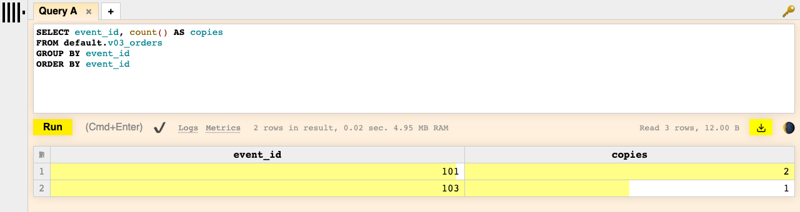

Справочник по ClickHouse · введение
Глава В.3
От приложения до аналитического отчёта: место ClickHouse в системе
Магазин принял оплату, но в отчёте её ещё нет. Проследим путь одной записи и выясним, на каком участке нужно искать причину.
- Уровень
- Первое знакомство с системой
- Уже известно
- Назначение ClickHouse и базовые различия СУБД из В.1–В.2
- Результат
- Карта пути данных и проверка достоверности отчёта
- Понадобится
- Для чтения — только эта глава; опыт уже выполнен на отдельном стенде
§1Где появляется запись
Зачем это знатьЧтобы отличать факт покупки от его появления в аналитике.
Покупатель оплачивает заказ. В выбранной для главы системе приложение магазина получает подтверждение оплаты и сохраняет запись в своей рабочей базе. Событие — зафиксированный факт, произошедший в определённый момент: здесь «оплата заказа подтверждена». У события есть идентификатор — значение, позволяющее отличить его от остальных событий, — время и данные об оплате.
Все номера, времена и суммы в истории ниже условные. Мы считаем одну подтверждённую оплату одним событием; частичные оплаты, отмены и возвраты в этот пример не входят. Идентификатор 101 сохраняется у события на всём пути до отчёта.
На первой схеме проверим, где уже существует факт оплаты, когда аналитическая загрузка ещё не начиналась.
- Приложение магазинаПолучено подтверждение оплаты
- Рабочая база — источникСобытие 101
10:00 · 2 400 ₽
Приложение может показать покупателю успешную оплату по записи рабочей базы. Отсутствие той же оплаты в ClickHouse пока не доказывает, что покупка не состоялась. В другой архитектуре источником может служить файл или журнал событий. Для проверки отчёта нужно установить происхождение его записей.
Проверка понимания:подтверждение оплаты найдено в источнике. Теперь нужно перенести запись в аналитику.
§2Как появляется аналитическая копия
Зачем это знатьЧтобы увидеть работу между двумя хранилищами, которую нельзя заменить одним подключением к серверу.
Для отчёта по оплатам нужны не все сведения приложения. Отдельная программа-загрузчик читает подтверждённые оплаты, выбирает нужные поля, проверяет их и передаёт записи в ClickHouse. Конвейер загрузки — последовательность таких действий от чтения источника до записи в целевую систему. Эти действия могут выполнять несколько программ.
В нашем примере из исходной записи убирают контакт покупателя и адрес доставки: для суммы оплат они не нужны. Идентификатор события сохраняют, чтобы позднее сопоставить копию с источником. Схема показывает и передачу, и изменение состава данных.
- Источник101 · 10:00 · 2 400 ₽
Контакт и адрес - ЗагрузчикОтобрать подтверждённые оплаты
Проверить поля
Передать нужное - ClickHouse101 · 10:00 · 2 400 ₽
Без контакта и адреса
На выходе находится набор записей для определённых расчётов. Если загрузчик не читает возвраты, отчёт по этим данным нельзя называть выручкой за вычетом возвратов. Состав копии ограничивает смысл будущего результата. Аналитический запрос — команда для расчёта по выбранным данным, например суммы подтверждённых оплат за день.
По-простому: копии оплаченных квитанций
В магазине оригиналы квитанций могут оставаться у кассы. Бухгалтеру раз в несколько минут передают копии с номером, временем и суммой.
- Оригинал у кассыПодтверждает отдельную оплату
- Подготовка копийВыбрать нужные сведения и передать
- Расчёт по копиямСложить суммы за период
Что есть что:оригиналы — источник; подготовка и доставка копий — конвейер загрузки; хранилище копий — ClickHouse; расчёт по ним — аналитический запрос.
Граница аналогии:электронная копия может иметь другую структуру. Один факт может быть представлен несколькими связанными записями. Сохранение соответствия между ними нужно проверять отдельно.
Остаётся определить, когда подготовленные записи должны появиться в копии.
§3Почему запись появляется не сразу
Зачем это знатьЧтобы понимать, на какой момент отчёт отражает работу магазина.
Пакет — группа записей, которую загрузчик отправляет вместе. В нашей условной системе он запускается каждые пять минут и передаёт накопленные оплаты одной порцией. Это сокращает число отдельных отправок и связанных с ними служебных действий. Здесь нет замера скорости и нет утверждения, что пять минут подходят любой системе.
Проследим событие 101 по времени. Сопоставим момент оплаты с отправкой пакета и чтением результата.
- 10:00 — источникСохранено событие 101
- 10:03 — отчёт101 ещё не включено: порция ожидает отправки
- 10:05 — отправкаЗагрузчик передаёт накопленный пакет
- 10:06 — новый запрос101 учтено, если запись пакета завершилась
Свежесть данных характеризует, насколько данные отчёта отстают от источника. Для нашей проверки определим границу: до какого момента оплаты полностью перенесены. Если в 10:06 подтверждена полнота только до 10:00, отставание этой границы — шесть минут. Время выполнения запроса — другая величина: даже мгновенный расчёт может читать старую копию.
Пятиминутное расписание само по себе не гарантирует отставание не более пяти минут. Добавляются время чтения, передачи и записи, возможны сбой и повтор. Максимальное время события в ClickHouse тоже не доказывает полноту: более раннюю запись можно пропустить. Когда проверенной границы нет, в отчёте указывают время последней успешной загрузки и отсутствие проверки полноты. Далее разберём, почему успешной отправки недостаточно.
§4Как возникают пропуск и дубль
Зачем это знатьЧтобы различать два сбоя доставки и не принимать повтор запроса за исправление любого расхождения.
Предположим, источник содержит события 101, 102 и 103. Если загрузчик ошибочно отобрал только 101 и 103, событие 102 отсутствует в копии. Это пропуск: факт есть в источнике, но нет там, где его ожидает аналитический запрос.
Другой случай: сервер записал событие 101, но подтверждение успешной записи не дошло до загрузчика. Загрузчик повторяет отправку. Если защита от повторов не предусмотрена или не сработала, одна оплата оказывается записанной дважды — возникает дубль. Результат зависит от выбранных правил повторной загрузки; ниже проверим один конкретный вариант.
Сравним наборы по идентификаторам. Стрелки показывают два последовательных действия загрузчика над исходными событиями.
- Источник101 · 102 · 103
- Неполный отборПереданы 101 · 103
102 пропущено - Повтор 101В ClickHouse: 101 · 101 · 103
101 продублировано
Наличие идентификатора в строке не означает, что сервер автоматически запретит вторую строку с тем же значением. Правила безопасного повтора и устранения дублей проектируются отдельно. Проверим сначала, удастся ли обнаружить расхождение по итогам отчёта.
§5Почему нужно сверять отчёт с источником
Зачем это знатьЧтобы проверить не только правдоподобие суммы, но и состав записей, из которых она получилась.
Теперь отделим историю от запуска. Реальный опыт выполнен на ClickHouse 26.8.36.3 в собственном контейнере, на искусственных данных из source.csv. Файл играет роль источника; время сервера — UTC. Настоящее приложение магазина и потеря сетевого подтверждения в опыте не запускались. Пропуск и повтор созданы намеренно.
| Событие | Время 18.11.2026 | Оплачено |
|---|---|---|
| 101 | 10:00 | 2 400 ₽ |
| 102 | 10:01 | 2 400 ₽ |
| 103 | 10:02 | 900 ₽ |
Сначала создана пустая таблица, затем записаны 101 и 103, после чего отдельно повторно записано 101. Использован движок MergeTree — способ хранения таблицы, который будет подробно разобран позже. Ключ сортировки по идентификатору не задаёт запрет повторов. Никакое автоматическое исправление состава данных для опыта не настраивалось.
Аналитический запрос здесь считает число строк, сумму оплат и самое позднее время события. Такой расчёт проверяет общие итоги. Состав событий проверим отдельно. Получены следующие результаты:
| Состояние | Строк | Сумма | Позднее событие |
|---|---|---|---|
| До загрузки | 0 | Не вычисляли | Не вычисляли |
| Загружены 101 и 103 | 2 | 3 300 ₽ | 10:02 |
| Повторно загружено 101 | 3 | 5 700 ₽ | 10:02 |
| Ожидается по источнику | 3 | 5 700 ₽ | 10:02 |
После повтора совпали и сумма, и число строк, и максимальное время. Но оплата 102 на 2 400 ₽ отсутствует, а оплата 101 на те же 2 400 ₽ посчитана дважды. Чтобы проверить состав, выполнен второй запрос: он считает число копий каждого идентификатора.

event_id — идентификатор события; copies — число его строк в копии. SQL здесь показан как свидетельство проверки; изучать его синтаксис до подготовки стенда не требуется.В результате запроса у 101 две копии, у 103 — одна. Строки для 102 нет. Сверка с источником выявила и повтор, и пропуск. При реальной сверке сначала согласуют период, часовой пояс, правила отбора и момент завершения загрузки. Сравнивать все оплаты источника с копией только подтверждённых оплат за другой период бессмысленно. Затем проверяют недостающие и лишние идентификаторы, число копий и значения нужных полей; равные общие итоги — лишь предварительный контроль.
Материалы для воспроизведения после подготовки стенда
experiment.py читает CSV, создаёт default.v03_orders, выполняет две вставки и печатает проверки. Полный вывод запуска сохранён отдельно. Скрипт предназначен для воспроизведения этого опыта. Для промышленной загрузки в нём нет обработки сбоев и правил безопасного повтора.
Нужны Python 3 и собственный пустой сервер. Скрипту передают адрес сервера и учётные данные через переменные окружения CH_URL, CH_USER, CH_PASSWORD. Например, в оболочке macOS/Linux для отдельного сервера на порту 18373:
CH_URL=http://127.0.0.1:18373 CH_USER=student CH_PASSWORD=student python3 experiment.pyCSV должен лежать рядом со скриптом. Скрипт не удаляет и не очищает существующие данные. При повторном запуске на том же сервере создание существующей таблицы завершится ошибкой; для нового опыта нужен новый пустой стенд. Не запускайте его на общем сервере.
В опыте результат показан в браузере. Разделим роли программы, которая показала строки, и сервера, который их посчитал.
§6Кто хранит, кто запрашивает, кто показывает
Зачем это знатьЧтобы не путать сервер с окном клиента и готовым отчётом.
После загрузки нужно получить ответ на вопрос магазина: «Какова сумма подтверждённых оплат за выбранный период?» Для ответа серверу передают аналитический запрос. ClickHouse — серверная система: хранит загруженные данные и выполняет запросы. Клиент отправляет запрос серверу и получает ответ. clickhouse-client — программа для работы из терминала; Play UI — интерфейс для обращения к серверу из браузера.
Для сотрудника магазина результат может получать приложение или BI-инструмент — программа, которая строит отчёты и диаграммы по данным. Они тоже обращаются к серверу как клиенты, но их роль в этой схеме — подготовить представление результата для пользователя. Проверим направления: запрос уходит к серверу, строки ответа возвращаются потребителю.
- Приложение / BIОтправляет вопрос:
сумма оплат за период → - Сервер ClickHouseВыполняет расчёт по загруженным строкам
- Приложение / BIПолучает ответ и показывает отчёт
Кадр выше показывает ответ сервера в Play UI. Если закрыть вкладку, данные на сервере сохранятся. И наоборот: смена клиента не добавит пропущенное событие в ClickHouse. Внешний отчёт может ещё и сохранять ранее полученный ответ; тогда его время обновления нужно проверять отдельно от загрузки данных в сервер.
§7Что входит в ClickHouse, а что остаётся снаружи
Зачем это знатьЧтобы назначить место проверки каждому участку пути.
Внутри ClickHouse в нашем примере
Загруженные идентификаторы, времена и суммы оплат; описание таблицы; выполнение запроса и вычисление результата.
Вне ClickHouse в нашем примере
Подтверждение оплаты приложением; исходные записи и контакты покупателя; расписание и логика загрузчика; оформление и обновление внешнего отчёта.
Так распределены обязанности в выбранной системе. В другой системе ClickHouse может получать события непосредственно от приложения или сам читать внешний источник. Конвейер, правила отбора и проверку полноты нужно настроить в соответствии с задачей магазина.
Соберём карту для исходного вопроса «почему оплаты нет в отчёте». Теперь у каждого перехода есть свой предмет проверки.
- Приложение → источникСохранён ли факт оплаты?
- Загрузка → ClickHouseВключено ли событие в пакет? Записано ли один раз?
- Запрос → отчётВерны ли отбор и период? Обновлён ли показанный ответ?
Если события нет в источнике, проверяют регистрацию оплаты. Если оно есть в источнике, но отсутствует в аналитической копии после ожидаемой загрузки, проверяют доставку. Если строка есть в ClickHouse, но не включена в результат запроса, проверяют условия запроса и обновление результата у потребителя.
§8Частые ошибки
«В отчёте нет оплаты — значит, платёж не прошёл»
Сначала проверьте подтверждение и запись в источнике. Затем время последней загрузки и наличие события в копии. Отчёт может отставать или иметь другой отбор.
«Загрузчик сообщил об успехе — все записи перенесены»
Успешная отправка выбранного пакета не доказывает, что отбор включил все нужные события. В опыте запись 102 вообще не была отправлена. Нужна сверка состава с источником.
«Сумма совпала — можно публиковать»
В опыте дубль и пропуск взаимно компенсировались. Сверьте события и их значения за один согласованный период; отдельно проверьте повторные записи.
«Открою другой клиент и получу более полные данные»
Состав таблицы сохраняется при смене клиента. Проверяйте результат на том же сервере, с тем же запросом и правами. Сначала уточните адрес сервера, затем проверяйте загрузку, отбор и сохранённый внешним отчётом результат.
§9Проверьте себя
- В 10:04 событие 101 есть в источнике. Следующая отправка пакета назначена на 10:05. Можно ли уже считать отсутствие события в отчёте ошибкой загрузки?
Ответ и объяснение
Нет: по этому расписанию пакет ещё не отправлялся. Проверить нужно, попало ли событие в завершившуюся загрузку после 10:05. Само наступление 10:05 не доказывает успех.
- В копии есть событие с временем 10:02. Доказывает ли это, что все события до 10:02 перенесены?
Ответ и объяснение
Нет. В опыте 103 с временем 10:02 загружено, а 102 с временем 10:01 пропущено. Максимальное время не является подтверждением полной доставки более ранних событий.
- Play UI закрыт. Ночной загрузчик продолжает писать в работающий сервер. Прекратится ли накопление данных?
Ответ и объяснение
Нет, если загрузчик подключается к серверу независимо от браузера. Play UI — лишь один из клиентов; его открытая вкладка не нужна серверу для хранения и приёма данных.
- В ClickHouse верные строки, но внешний отчёт всё ещё показывает вчерашнюю сумму. Где искать следующую причину?
Ответ и объяснение
У потребителя результата: проверить период и условия запроса, время его запуска и обновление сохранённого ответа. Повторная загрузка правильных данных оставит причину без изменений и может создать дубли.
Самостоятельная задача: принять или отклонить отчёт
Все данные задачи условные. В источнике три подтверждённые оплаты: A — 700 ₽, B — 700 ₽, C — 200 ₽. После завершившейся загрузки в ClickHouse находятся A, A, C с теми же суммами. Отчёт показывает три оплаты на 1 600 ₽; время его обновления — текущее.
- Укажите конкретные пропуск и дубль.
- Объясните, почему сумма, число строк и текущее время обновления не подтверждают достоверность отчёта.
- Назовите участок системы для проверки и данные, которые нужно сопоставить.
- Сформулируйте решение: можно ли считать отчёт проверенным?
Ориентир для проверки решения
Пропущено B, повторено A. Равные суммы A и B скрыли ошибку в общем итоге, а свежее обновление лишь заново посчитало неверный набор. Проверяют отбор и повторные отправки в конвейере, сопоставляют идентификаторы, число копий и суммы с источником за тот же период. Отчёт нельзя считать проверенным до исправления состава и повторной сверки. Конкретный способ исправления без знания загрузчика выбирать рано.
§10Краткая шпаргалка
| Нужно выяснить | Куда смотреть |
|---|---|
| Была ли оплата? | Подтверждение и первичная запись в источнике |
| Что уже перенесено? | Состав завершённых пакетов и строки в ClickHouse |
| Насколько актуальна копия? | Проверенная граница полной загрузки; не только позднее время события |
| Нет ли пропусков и дублей? | Сопоставление событий и их значений с источником |
| Почему неверен показанный ответ? | Условия запроса, его запуск и обновление отчёта |
Дальше — подготовка стенда
Теперь можно переходить от карты системы к рабочему месту. В главе 0.1 подготовим сервер и учебные данные; в главе 0.2 научимся обращаться к нему из клиентов. Глава 1.1 посвящена базам, таблицам и первым командам проверки. Создание отчётов и надёжная загрузка будут опираться на эти действия.
Источники и границы проверки
- Локальный опыт: скрипт, данные, вывод; ClickHouse 26.8.36.3, 18.11.2026. Проверены вставки и расчёты, не производительность и не работа промышленной сети.
- Документация clickhouse-client — роль терминального клиента.
- HTTP interface — обращения к серверу и веб-интерфейс.
- MergeTree — ключ сортировки не является ограничением уникальности.